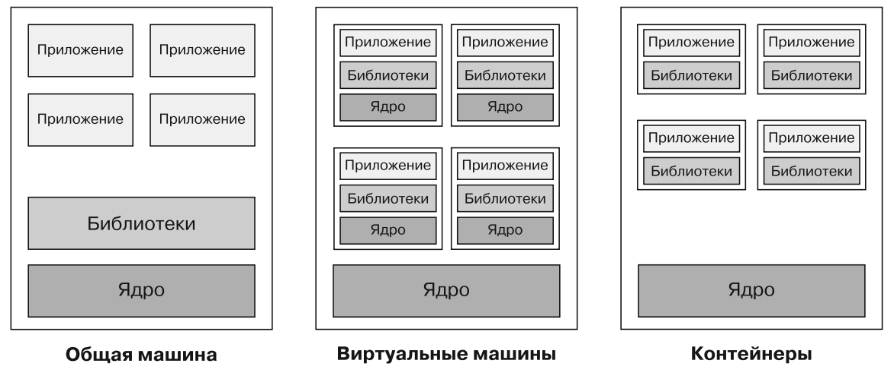
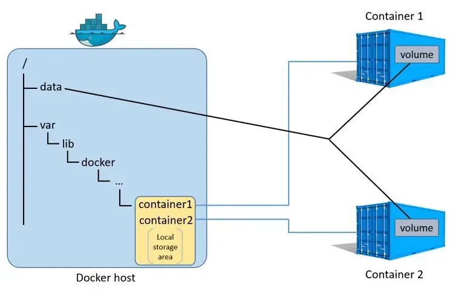

Docker¶
-
Концепция: Что такое контейнер, чем отличается от виртуальной машины (изоляция процессов vs изоляция всей ОС).
-
Основные понятия Docker + Docker Compose
-
Dockerfile: Уверенное чтение и написание. Понимание и умение использовать ключевые инструкции:
-
Основные команды:
docker build,docker run(с ключами-d,-p,-v,-e),docker ps,docker images,docker logs. -
Docker Volumes: Зачем нужны (для сохранения данных и конфигов). Как примонтировать том к контейнеру.
5.1. Контейнеризация и ВМ¶
Виртуальная машина - это изолированная программа, которая эмулирует физический компьютер со своим ядром, процессором, памятью, интерфейсами. Она располагается на физической машине (хост) и является гостем (guest machine).
Контейнер - изолированная среда приложения, которая использует не собственное ядро, а ядро машины, на которой располагается. Условно говоря, контейнер - это очень облегчённая версия ВМ.

5.2. Основные понятия¶
Образ контейнера (image) - шаблон, на основе которого создаются контейнеры. Образ содержит инструкции о том, какие файлы и программы должны быть включены в контейнер, а также команды для их настройки.
Регистрация образов - централизованное хранилище для хранения и распространения образов контейнеров. Например, Docker Hub — официальный репозиторий Docker.
Dockerfile - файл, содержащий инструкции для создания образа контейнера. В нем указаны шаги сборки, такие как установка пакетов, копирование файлов и запуск команд.
docker-compose.yml - манифест, в котором устанавливается взаимосвязь нескольких образов и их зависимости друг от друга.
Тома (volumes) - это специализированные директории на диске, которые монтируются внутри контейнера. Позволяют сохранять данные после перезапуска контейнера.
То есть, данные сохраняются локально, а потом при разворачивании контейнера копируются в него.

5.3. Dockerfile. Стандартный вид.¶
Dockerfile пишется внутри рабочей директории (обычно). Пишется без расширений, просто Dockerfile.
Если хотим назвать файл не Dockerfile, а как-то по-другому, то используем флаг -f и указываем актуальное имя.
FROM (базовый образ)
RUN (выполнить команду при сборке)
COPY / ADD (скопировать файлы в образ)
WORKDIR (рабочая директория)
EXPOSE (какой порт открывает приложение)
ENV (переменные окружения)
CMD и ENTRYPOINT
Пример Dockerfile:
# используем образ, на базе которого строится контейнер. Желательно лёгкие
FROM python:3.12
# создаём рабочую директорию внутри контейнера
WORKDIR /app
# первый раз COPY копирует в текущую директорию данные, которые редко меняются. в последующие разы данные будут браться из кэша, что сильно ускоряет запуск контейнера. поэтому COPY выполняется в 2 этапа
COPY requirements.txt ./
# запуск установки зависимости. используется по сути 1 раз, в следующие разы берет эти же данные из кэша.
RUN pip install -r requirements.txt
# копируем данные, которые меняются часто. в нашем случае код.
COPY hello_flask.py ./
# порт на локалхосте, на котором можно увидеть результат наших стараний
EXPOSE 5000
# CMD - по сути маленький терминал, но чтобы каждый раз не писать команду в реальный терминал, то вписываем её в файл. Автоматизация :)
# структура команды: CMD ["executor", "param1", "param2"]
# например: CMD ["echo", "kek"]
CMD ["python", "hello_flask.py"]
CMD и ENTRYPOINT (какая команда запускается при старте контейнера) - очень важный момент!
Есть ещё ENTRYPOINT, который фиксирует executor для cmd и терминала:
ENTRYPOINT [executor]
CMD [param1, param2]
ENTRYPOINT ["node"]
CMD ["index.js"]
FROM python:3.9-alpine
ENTRYPOINT ["python", "app.py"]
CMD ["--host", "0.0.0.0", "--port", "8000"]
5.4. Основные команды.¶
docker ps - просмотр бегущих контейнеров контейнеров и их данных
docker ps -a - просмотр всех контейнеров
docker images - просмотр построенных образов. Не забываем их чистить, много места едят
docker search <что ищем> - поиск по докерхабу (но можно и через браузер)
docker pull <что ищем> - стягиваем с докерхаба
docker play <что ищем> - стягиваем с докерхаба и запускаем
docker tag <old-name> <new-name> - переименование образа
docker logs <container_id> - логи контейнера
docker rm <container_id> - удаление контейнера
docker rmi <image-name> (rmi – remove image) - удаление образа или image rm.
Для удаления образа нужно сначала удалить контейнер, который его использует.
==================================== Пуш образа в DockerHub:
docker push имя-в-DockerHub/image-name:version
или
docker push имя-в-DockerHub/image-teg:version
====================================
Команды build и run.¶
Данные команды обладают различными полезными опциями.
- BUILD
docker build- построение образа
docker build -t image-name:v1 . -d
(имя образа маленькими буквами!)
. – поиск шаблона образа в текущей папке;
-t - тег, обычно тут пишут версию образа
-d - выполнить в фоновом режиме. Снижает вероятность ошибок
- RUN
docker run - запуск образа (для примера возьмём tomcat)
`docker run -it -p 1234:8080 tomcat`
it – интерактивно,
p – перенаправление
портов на 1234 c 8080 образа tomcat
После этой команды много букв – контейнер запущен. Прервать ctrl + C.
`docker run -d -p 1234:8080 tomcat`
-d - в фоновом режиме, рекомендуется
Специфичный IP:
docker run -d -p 127.0.0.1:8080:80 nginx
Важно отметить: 8080 - это желаемый порт, а 80 это стандартный порт в контейнере. То есть мы перебрасываем на желаемый порт на локальной машине с порта из контейнера.
Теперь рассмотрим флаги -v и -e
-v (volume) — Монтирование томов и директорий. Монтирует директорию или том из хостовой системы в контейнер.
-v /ПУТЬ/НА/ХОСТЕ:/ПУТЬ/В/КОНТЕЙНЕРЕ
docker run -v my_volume:/app/data nginx - cоздание тома
docker run -v ./nginx.conf:/etc/nginx/nginx.conf -p 80:80 nginx
-e (enviroment) -устанавливает переменные окружения внутри контейнера.
-e ПЕРЕМЕННАЯ=ЗНАЧЕНИЕ
docker run -e DEBUG=true my-app
Конфигурация базы данных:
docker run -d \
-e POSTGRES_DB=mydb \
-e POSTGRES_USER=admin \
-e POSTGRES_PASSWORD=secret \
-p 5432:5432 \
postgres
Резюмируя:
-d - запуск в фоновом режиме
-p - перенаправление портов
-v - для томов
-e - для переменных
5.5. Volumes¶
Том создаётся командой docker volume create. Если имя не указано, Docker сгенерирует его автоматически.
docker volume create my_volume
Том монтируется к контейнеру с помощью опции -v
docker run -d --name my_container -v my_volume:/app/data my_image
том my_volume подключается к пути /app/data внутри контейнера my_container.
Управление
- docker volume ls — список томов;
- docker volume inspect — подробности тома (путь на хосте и др.);
- docker volume rm — удалить том (если он больше не используется контейнерами);
- docker volume prune — удалить все тома, не привязанные к контейнерам (используется для очистки).
Docker compose¶
Файл Docker Compose создаётся в той же папке проекта, имя файла
обязательно: docker-compose.yml
Здесь описываются различные образы. После написания (или копирования из документации) файла docker-compose запускается двумя командами:
docker-compose build
docker-compose up -d
или docker-compose up --build
Пример с flask:
FROM python:3.11-slim-bullseye
WORKDIR /usr/src/app
COPY requirements.txt ./
RUN pip install --no-cache-dir -r requirements.txt
COPY . .
CMD ["python", "hello_flask.py"]
Flask==2.3.3
docker-compose.yml:
services:
flask-app:
build: . # сбилдить по Dockerfile из этой же директории
container_name: flask-container
ports:
- "5000:5000"
вводим и идём на localhost:5000
docker-compose up --build
А вот пример docker-compose.yaml с django и postgresql.
services:
django:
build: .
container_name: django-container
command: python manage.py runserver 0.0.0.0:8000
volumes:
- .:/usr/src/app
ports:
- "8000:8000"
depends_on:
- pgdb
pgdb:
image: postgres
environment:
- POSTGRES_DB=postgres # db name
- POSTGRES_USER=postgres # db login
- POSTGRES_PASSWORD=postgres # db password
container_name: pgdb
volumes:
- pgdbdata:/var/lib/postgresql/data
volumes:
pgdbdata:
# build: постройка контейнера по Dockerfile из текущей папки (так как точка).
# container_name: необязательная команда, задаёт имя контейнеру.
# command: напишем команду, запускающую локальный сервер. В фреймворке
джанго есть предустановленный локальный сервер, который будем запускать.
manage.py – это специальный файл, к которому будем обращаться через питон и из этого файла уже вызывается та или иная команда. В нашем случае это команда runserver. И указываем порт.
# volumes: указываем, что в текущем проекте берём текущую папку и соединянем это
с папкой контейнера, путь которой указан под WORKDIR в Dockerfile. Таким образом указываем объединение папок.
# depends_on: настройка указывает что данный сервис (в нашем случае django)
зависит от другого указанного образа. То есть через сервис джанго мы обращаемся к
сервису pgdb.
# pgdb: Джанго всегда идёт с какой-нибудь базой данной, например postgreSQL.
Назвали сокращённо pgdb (PosGres-db). Все детали какие образы подключать надо
смотреть в документации проекта на докерхабе. Там подробно описаны все переменные
окружения.
# enviroment: перечисление необходимых переменных из документации postgreSQL.
docker-compose run django django-admin startproject project-name path-to-folder
docker-compose run django django-admin startproject my-django .
(run используем вместо build, чтобы была возможность сюда же в команду дописать питоновских команд)